I'm the marketing-technology and AI developer at YouVersion (the Bible App, 1 billion+ installs). When we started wondering what AI could actually do for our marketing, I didn't wait for a mandate — I just started building, ran up a real token bill exploring what was possible, and shipped two production systems on my own. One picks the best message for each user with bandit ML algorithms (Next.js + TypeScript); the other lets non-technical marketers launch localized campaigns across 70+ languages. The work contributed to a 20% increase in daily active users and a 200% increase in monthly revenue. I'm now the tech lead on a half-dozen web apps for our organization.
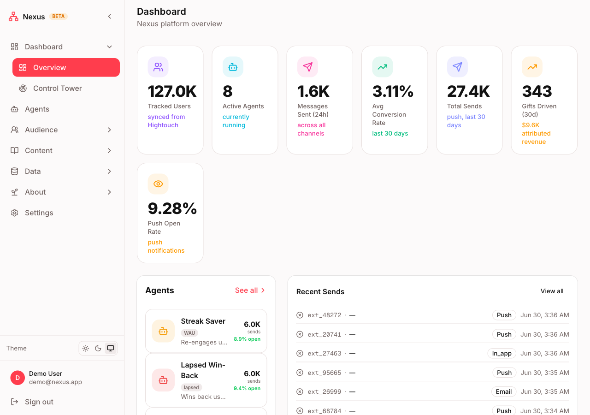
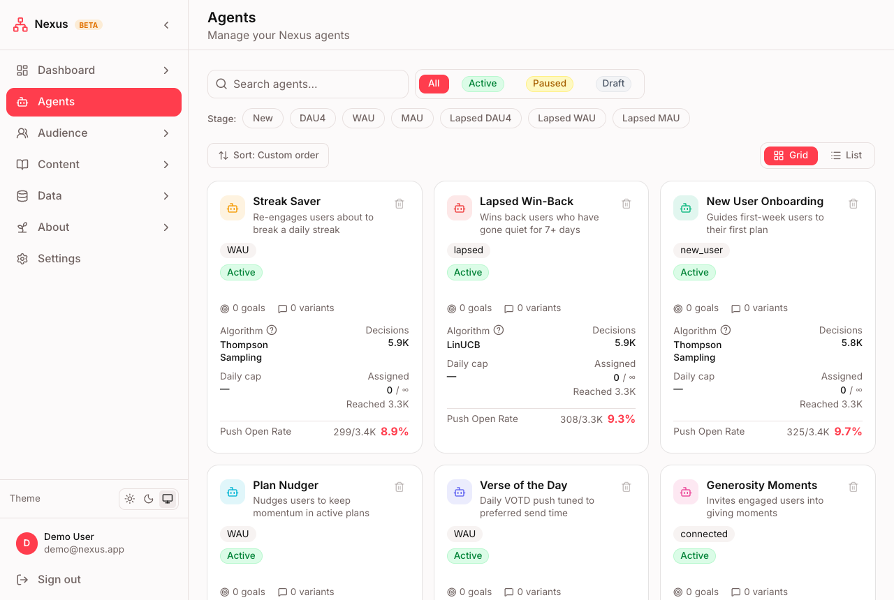
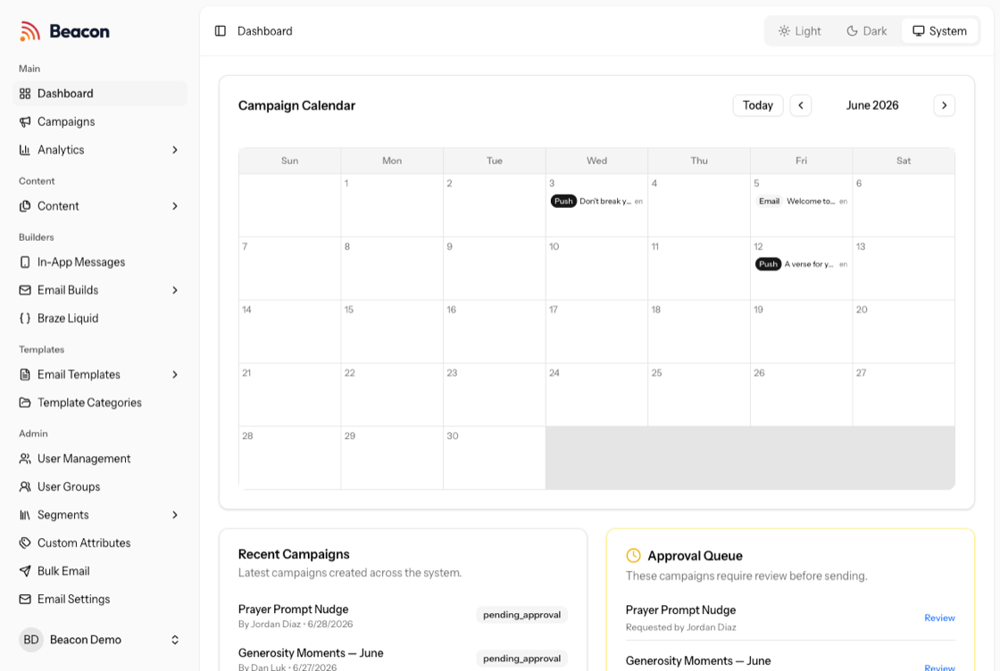
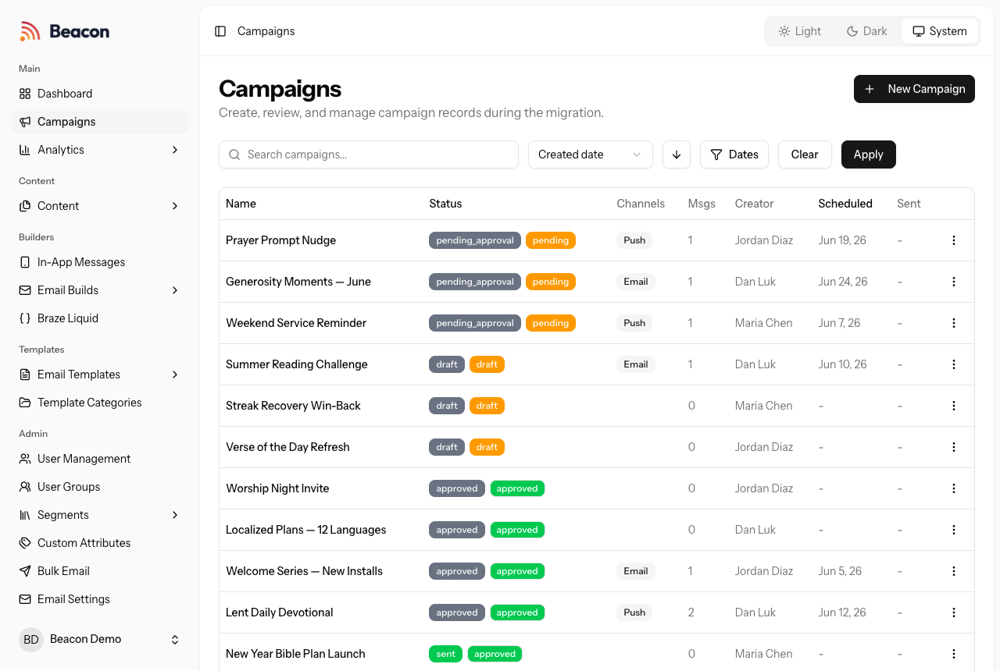
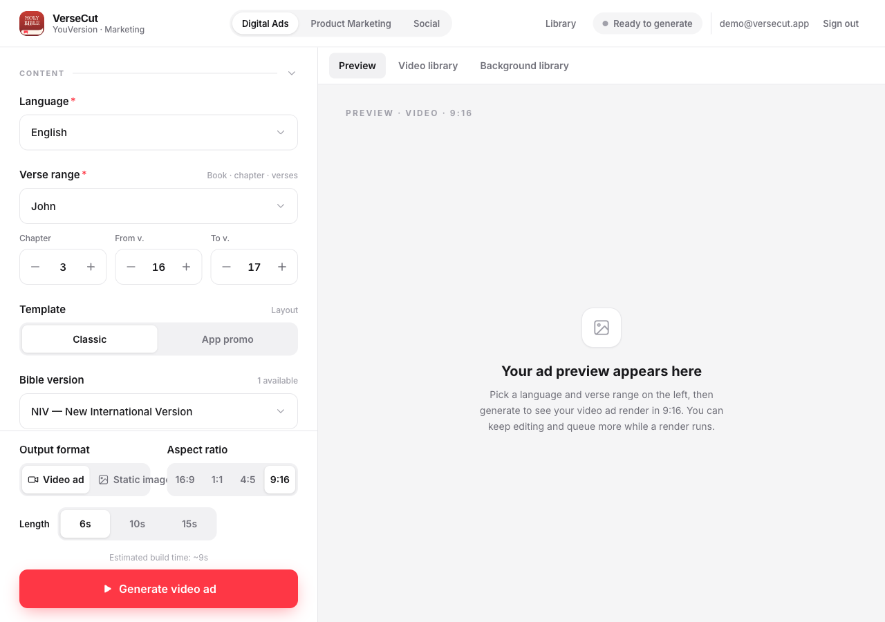
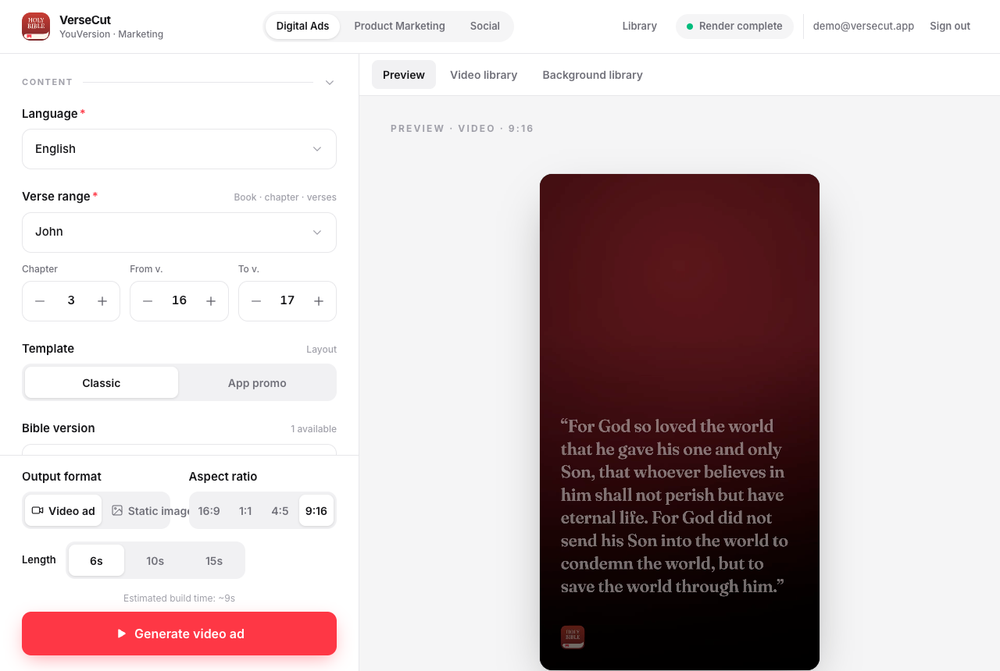
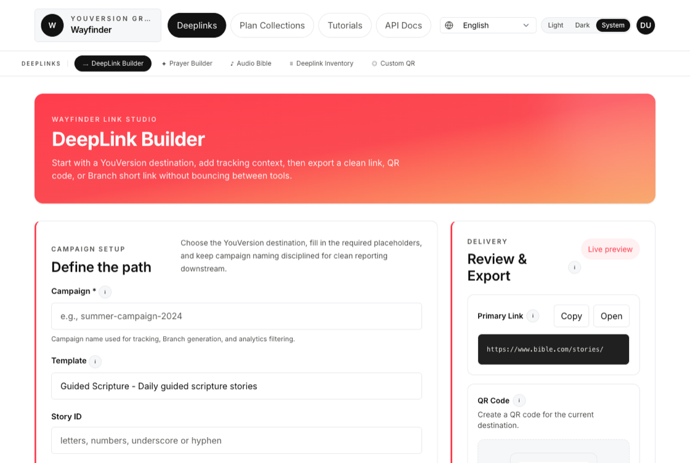
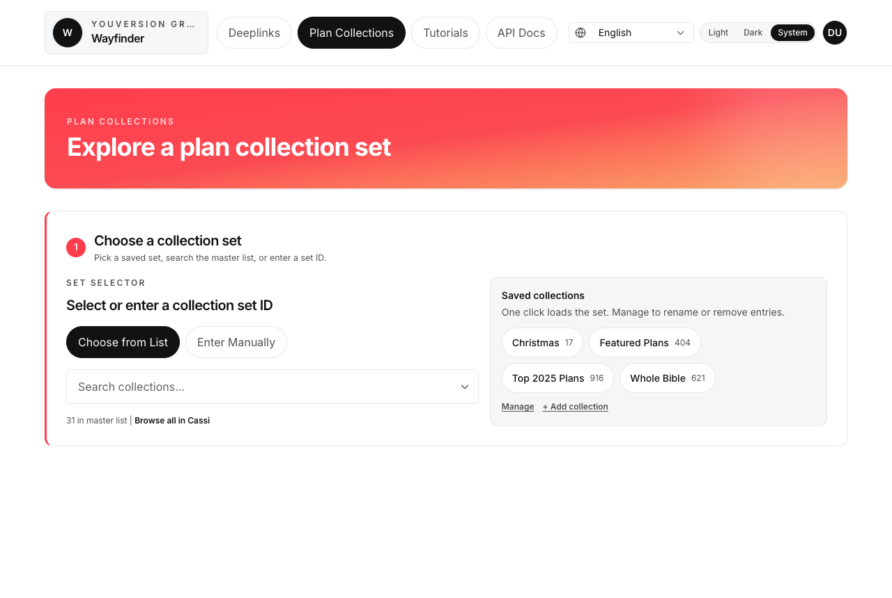
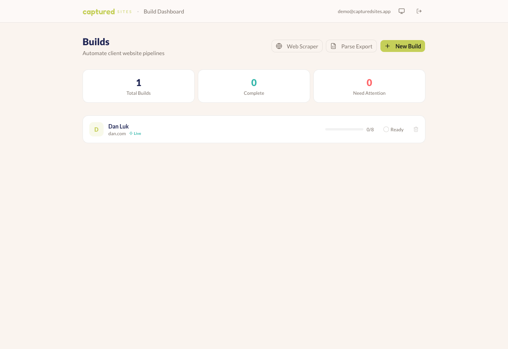
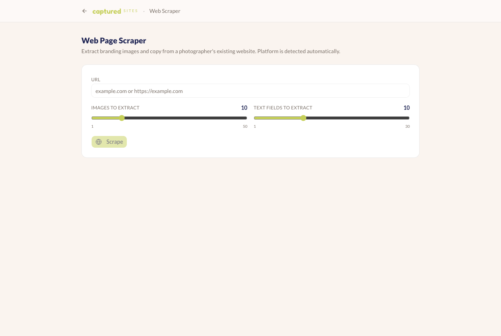
The AI builder-and-enabler for marketing teams on a 1 Billion+ install product. Architected Nexus (agentic ML decisioning) and Beacon (self-service campaign platform), shipped an LLM workflow that produces launch-ready creative in 70+ languages, and drove a 200% increase in monthly campaign revenue — operating as an effectively one-person platform team.
Delivered architecture design, system integration, and code automation for DoD programs — high-voltage detonator and battery systems — with diagnostic problem-solving in mission-critical, cross-functional hardware environments.
Planted new churches from the ground up — pastoring congregations and discipling leaders. Cast vision, built community, and owned the unglamorous operational work that keeps an organization running.
Started new campus ministries by planting small-group communities. Created content for small groups and sermons, and built and maintained the websites that deployed it — my first taste of shipping software to reach people at scale.
Raised $2M for nonprofit organizations — owning the full cycle of relationship-building, storytelling, and follow-through that turns a mission into funded reality.
Graduate study in aerospace engineering — where systems thinking and reasoning under uncertainty became second nature.
Bachelor's in aerospace engineering.
Eight years married to Maggie, dad to four. The systems I care about most don't run in production — they're at home. Same principles, though: show up every day, build for the long run, and sweat the details no one else sees.
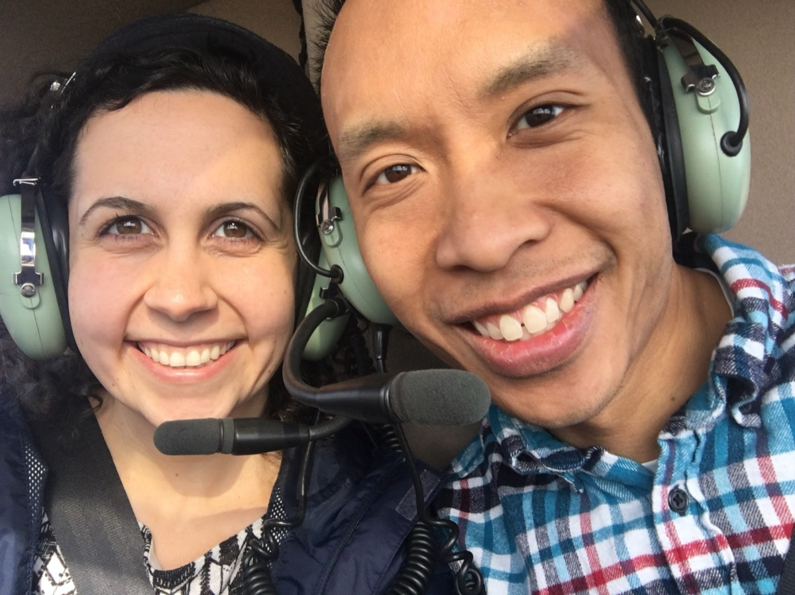
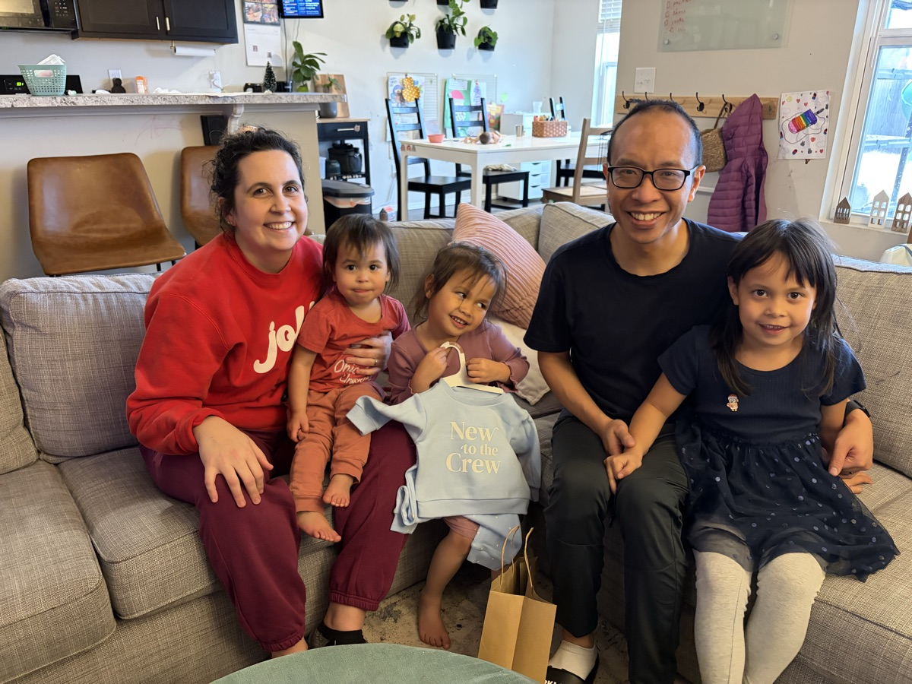
I'm exploring staff / senior engineering roles where I can own meaningful surface area and turn ambiguous problems into dependable, shipped systems. The fastest way to reach me is email.